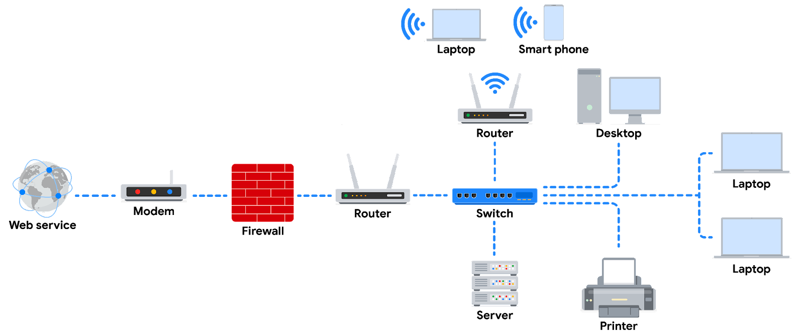

Network Devices and Connections
A foundational understanding of network architecture, sometimes referred to as network
design, will help you as you learn about security vulnerabilities inherent in all networks
and how malicious actors attempt to exploit them. Let’s get started!
Network Devices
Network devices maintain information and services for users of a network. These devices
connect over wired and wireless connections. After establishing a connection to the network,
the devices send data packets. The data packets provide information about the source and the
destination of the data. This is how the information is sent and received via different
devices on a network.
The network is the overall infrastructure that allows devices to communicate with each other.
Network devices are specialized vehicles like routers and switches that manage what is being
sent and received over the network. Additionally, devices like computers and phones connect
to the network via network devices.

Note:
In this diagram, a router connects to the internet through a modem, which is provided by your
internet service provider (ISP). The firewall is a security device that monitors incoming
and outgoing traffic on your network. The router then directs traffic to the devices on your
home network, which can include computers, laptops, smartphones, tablets, printers, and
other devices. You can imagine here that the server is a file server. All devices on this
network can access the files in this server. This diagram also includes a switch which is an
optional device that can be used to connect more devices to your network by providing
additional ports and Ethernet connections. Additionally, there are 2 routers connected to
the switch here for load balancing purposes which will improve the performance of the
network.
Devices and Desktop Computers
Most internet users are familiar with everyday devices, such as personal computers, laptops,
mobile phones, and tablets. Each device and desktop computer has a unique MAC address and IP
address, which identify it on the network. They also have a network interface that sends and
receives data packets. These devices can connect to the network via a hard wire or a
wireless connection.
Firewalls
A firewall is a network security device that monitors traffic to or from your network. It is
like your first line of defense. Firewalls can also restrict specific incoming and outgoing
network traffic. The organization configures the security rules of the firewall. Firewalls
often reside between the secured and controlled internal network and the untrusted network
resources outside the organization, such as the internet. Remember, though, firewalls are
just one line of defense in the cybersecurity landscape.
Servers
Servers provide information and services for devices like computers, smart home devices, and
smartphones on the network. The devices that connect to a server are called clients. The
following graphic outlines this model, which is called the client-server model. In this
model, clients send requests to the server for information and services. The server performs
the requests for the clients. Common examples include DNS servers that perform domain name
lookups for internet sites, file servers that store and retrieve files from a database, and
corporate mail servers that organize mail for a company.
Hubs and Switches
Hubs and switches both direct traffic on a local network. A hub is a device that provides a
common point of connection for all devices directly connected to it. Hubs additionally
repeat all information out to all ports. From a security perspective, this makes hubs
vulnerable to eavesdropping. For this reason, hubs are not used as often on modern networks;
most organizations use switches instead. Hubs are more commonly used for a limited network
setup like a home office.
Switches are the preferred choice for most networks. A switch forwards packets between
devices directly connected to it. They analyze the destination address of each data packet
and send it to the intended device. Switches maintain a MAC address table that matches MAC
addresses of devices on the network to port numbers on the switch and forwards incoming data
packets according to the destination MAC address. Switches are a part of the data link layer
in the TCP/IP model. Overall, switches improve performance and security.
Routers
Routers connect networks and direct traffic, based on the IP address of the destination
network. Routers allow devices on different networks to communicate with each other. In the
TCP/IP model, routers are a part of the network layer. The IP address of the destination
network is contained in the IP header. The router reads the IP header information and
forwards the packet to the next router on the path to the destination. This continues until
the packet reaches the destination network. Routers can also include a firewall feature that
allows or blocks incoming traffic based on information in the transmission. This stops
malicious traffic from entering the private network and damaging the local area network.
Modems and Wireless Access Points
Modems usually connect your home or office with an internet service provider (ISP). ISPs
provide internet connectivity via telephone lines or coaxial cables. Modems receive
transmissions or digital signals from the internet and translate them into analog signals
that can travel through the physical connection provided by your ISP. Usually, modems
connect to a router that takes the decoded transmissions and sends them on to the local
network.
Note: Enterprise networks used by large organizations to connect their users
and devices often use other broadband technologies to handle high-volume traffic, instead of
using a modem.
Wireless Access Point
A wireless access point sends and receives digital signals over radio waves creating a
wireless network. Devices with wireless adapters connect to the access point using Wi-Fi.
Wi-Fi refers to a set of standards that are used by network devices to communicate
wirelessly. Wireless access points and the devices connected to them use Wi-Fi protocols to
send data through radio waves where they are sent to routers and switches and directed along
the path to their final destination.
Using Network Diagrams as a Security Analyst
Network diagrams allow network administrators and security personnel to imagine the
architecture and design of their organization’s private network.
Network diagrams are maps that show the devices on the network and how they connect. Network
diagrams use small representative graphics to portray each network device and dotted lines
to show how each device connects to the other. By studying network diagrams, security
analysts develop and refine their strategies for securing network architectures.
Cloud computing and software-defined networks
In this section of the course, you’ve been learning the basic architecture of
networks. You’ve learned about how physical network devices like workstations,
servers, routers, and switches connect to each other to create a network. Networks
may cover small geographical areas, as is the case in a local area network (LAN). Or
they may span a large geographic area, like a city, state, or country, as is the
case in a wide area network (WAN). You also learned about cloud networks and how
cloud computing has grown in recent years.
In this reading, you will further examine the concepts of cloud computing and cloud
networking. You’ll also learn about hybrid networks and software-defined networks,
as well as the benefits they offer. This reading will also cover the benefits of
hosting networks in the cloud and why cloud-hosting is beneficial for large
organizations.
Computing processes in the cloud
Traditional networks are called on-premise networks, which means that all of the
devices used for network operations are kept at a physical location owned by the
company, like in an office building, for example. Cloud computing, however, refers
to the practice of using remote servers, applications, and network services that are
hosted on the internet instead of at a physical location owned by the company.
A cloud service provider (CSP) is a company that offers cloud computing services.
These companies own large data centers in locations around the globe that house
millions of servers. Data centers provide technology services, such as storage, and
compute at such a large scale that they can sell their services to other companies
for a fee. Companies can pay for the storage and services they need and consume them
through the CSP’s application programming interface (API) or web console.
CSPs provide three main categories of services:
- Software as a service (SaaS):refers to software suites operated by the CSP that
a company can use remotely without hosting the software.
- Infrastructure as a service (IaaS):refers to the use of virtual computer
components offered by the CSP. These include virtual containers and storage that
are configured remotely through the CSP’s API or web console. Cloud-compute and
storage services can be used to operate existing applications and other
technology workloads without significant modifications. Existing applications
can be modified to take advantage of the availability, performance, and security
features that are unique to cloud provider services.
- Platform as a service (PaaS):refers to tools that application developers can use
to design custom applications for their company. Custom applications are
designed and accessed in the cloud and used for a company’s specific business
needs.
 Differences between IaaS, PaaS, and SaaS and how each connects to a physical data
center.
Differences between IaaS, PaaS, and SaaS and how each connects to a physical data
center.
Hybrid cloud environments
When organizations use a CSP’s services in addition to their on-premise computers,
networks, and storage, it is referred to as a hybrid cloud environment. When
organizations use more than one CSP, it is called a multi-cloud environment. The vast
majority of organizations use hybrid cloud environments to reduce costs and maintain
control over network resources.
Software-defined networks
CSPs offer networking tools similar to the physical devices that you have learned about
in this section of the course. Next, you’ll review software-defined networking in the
cloud. Software-defined networks (SDNs) are made up of virtual network devices and
services. Just like CSPs provide virtual computers, many SDNs also provide virtual
switches, routers, firewalls, and more. Most modern network hardware devices also
support network virtualization and software-defined networking. This means that physical
switches and routers use software to perform packet routing. In the case of cloud
networking, the SDN tools are hosted on servers located at the CSP’s data center.
Benefits of cloud computing and software-defined networks
Reliability
Reliability in cloud computing is based on how available cloud services and resources
are, how secure connections are, and how often the services are effectively running.
Cloud computing allows employees and customers to access the resources they need
consistently and with minimal interruption.
Cost
Traditionally, companies have had to provide their own network infrastructure, at least
for internet connections. This meant there could be potentially significant upfront
costs for companies. However, because CSPs have such large data centers, they are able
to offer virtual devices and services at a fraction of the cost required for companies
to install, patch, upgrade, and manage the components and software themselves.
Scalability
Another challenge that companies face with traditional computing is scalability. When
organizations experience an increase in their business needs, they might be forced to
buy more equipment and software to keep up. But what if business decreases shortly
after? They might no longer have the business to justify the cost incurred by the
upgraded components. CSPs reduce this risk by making it easy to consume services in an
elastic utility model as needed. This means that companies only pay for what they need
when they need it.
Changes can be made quickly through the CSPs, APIs, or web console—much more quickly
than if network technicians had to purchase their own hardware and set it up. For
example, if a company needs to protect against a threat to their network, web
application firewalls (WAFs), intrusion detection/protection systems (IDS/IPS), or L3/L4
firewalls can be configured quickly whenever necessary, leading to better network
performance and security.
Key takeaways
In this reading, you learned more about cloud computing and cloud networking. You
learned that CSPs are companies that own large data centers that house millions of
servers in locations all over the globe and then provide modern technology services,
including compute, storage, and networking, through the internet. SDNs are an approach
to network management. SDNs enable dynamic, programmatically efficient network
configurations to improve network performance and monitoring. This makes it more like
cloud computing than traditional network management. Organizations can improve
reliability, save costs, and scale quickly by using CSPs to provide networking services
instead of building and maintaining their own network infrastructure.